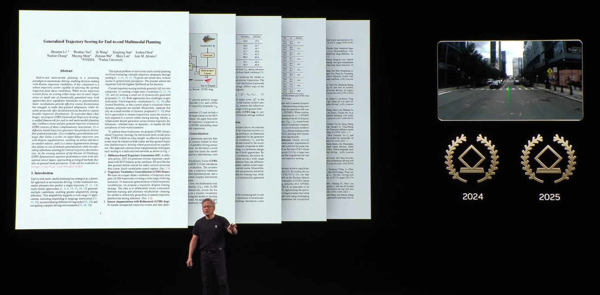
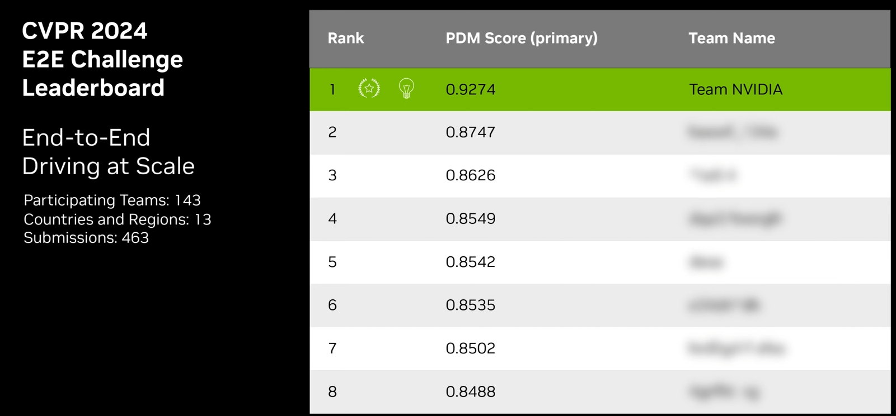

About Me
I am a CS Master's student at Fudan University, advised by Zuxuan Wu. I am also a research intern at NVIDIA, working with Shiyi Lan, Zhiding Yu, and Jose M. Alvarez. Previously, I received my Bachelor's degree at Fudan University, majoring in Software Engineering.
Research
My research focuses on developing reliable learning-based planning systems for autonomous driving and robotics. I led the development of the Hydra-MDP series (e.g., Hydra-MDP, GTRS), which established the trajectory scoring paradigm for end-to-end autonomous driving systems. Previously, I worked on 3D perception algorithms for autonomous driving.
News
-

GTRS scored a consecutive win at CVPR-25 Autonomous Grand Challenge, End-to-end Driving.
[Jensen Huang's GTC Paris Keynote 2025]
[Financial Report] -

Hydra-MDP won the championship and the Innovation Award at CVPR-24 Autonomous Grand Challenge, End-to-end Driving.
[NVIDIA DriveLabs] | [Demo] | [Blog]
[Financial Report]
Publications
Runner-up, Innovation Award at ICCV-25 Driving Simulation from Real-World Data, Closed-Loop Driving in Photorealistic Simulation.
Winner Solution at CVPR-25 Autonomous Grand Challenge, End-to-end Driving
arxiv, 2025
*Equal Contribution
Proc. IEEE, 2025.
Winner Solution at CVPR-24 Autonomous Grand Challenge, End-to-end Driving.